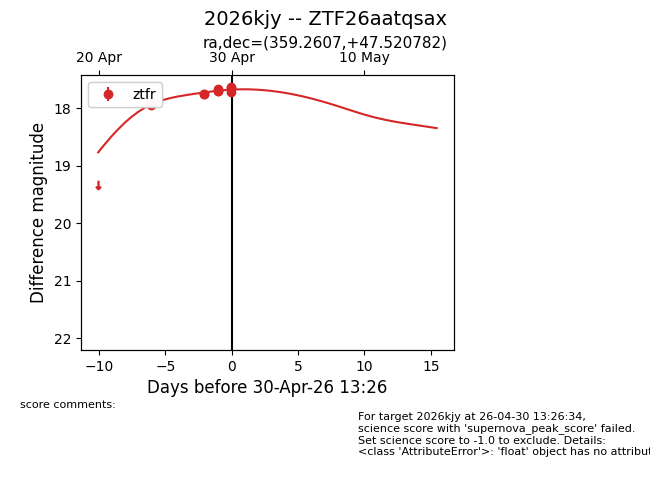
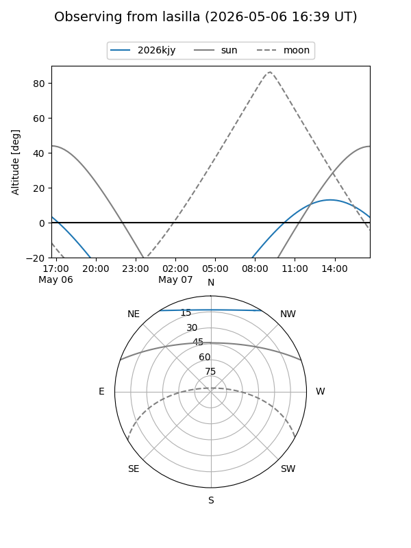
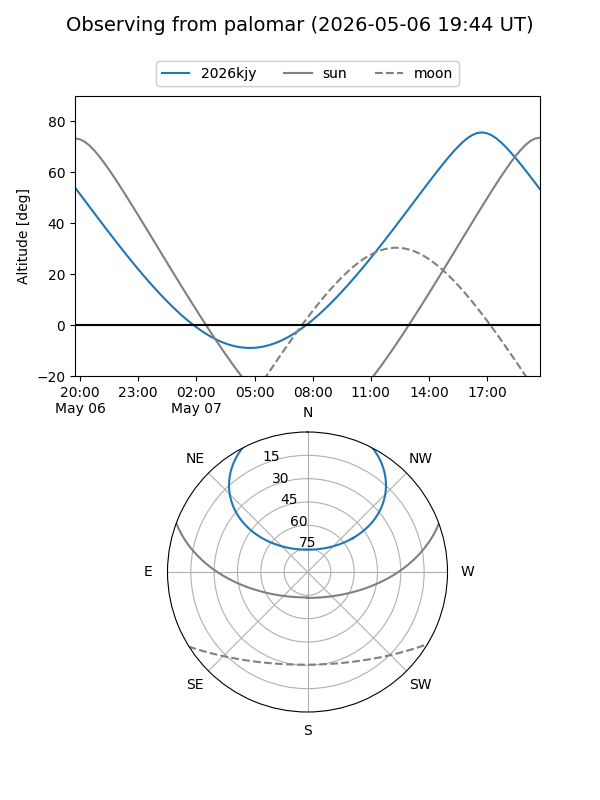
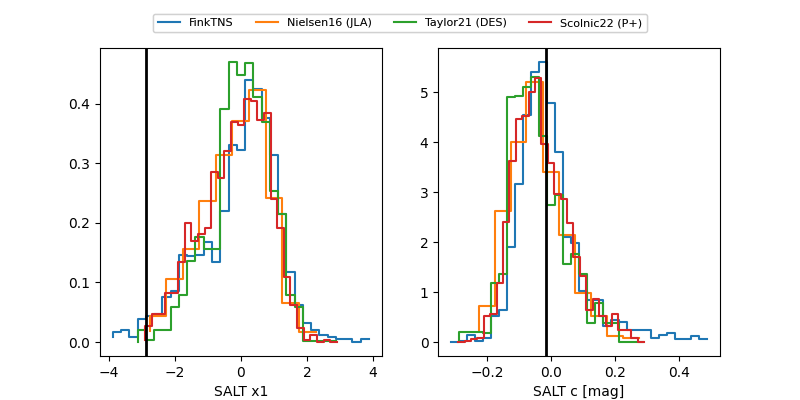

2026kjy
Target 2026kjy at 2026-04-30 13:32
Aliases and brokers:
FINK: link
Lasair: link
ALeRCE: link
TNS: link
YSE: link
alt names
ZTF26aatqsax (ztf,fink_ztf)
2026kjy (tns,yse)
Coordinates:
equatorial (ra, dec) = 359.2607,+47.52078
equatorial (HMS+DMS) = 23:57:02.58,+47:31:14.81
galactic (l, b) = (113.4987,-14.35220)
Flags:
Photometry:
last ztfr=17.64
11 ztfr detections
Lightcurve

Visibility


Additional plots
